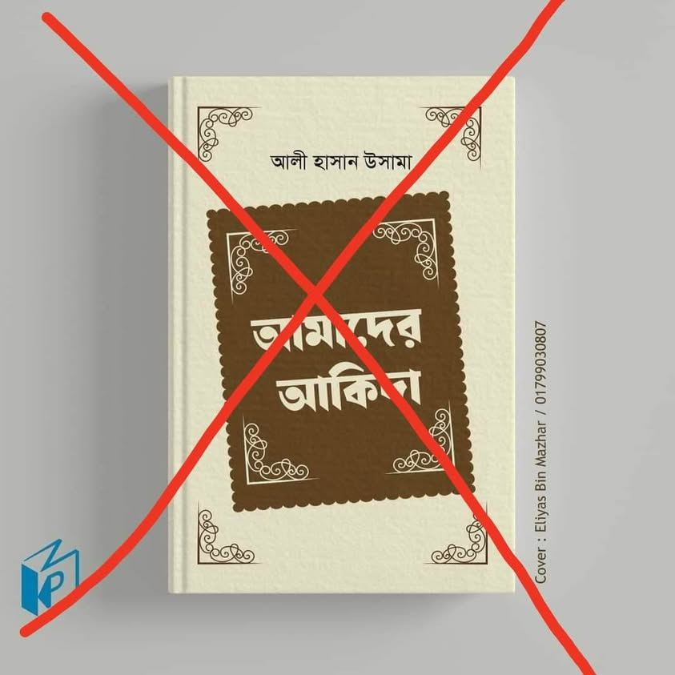

আমাদের আকিদাহ” বইয়ের নামের সঙ্গে আমি শতভাগ সহমত। পারফেক্ট নাম। এটা স্রেফ এন্ড স্রেফ…
২২ জুলাই, ২০২৩
“আমাদের আকিদাহ” বইয়ের নামের সঙ্গে আমি শতভাগ সহমত। পারফেক্ট নাম। এটা স্রেফ এন্ড স্রেফ আপনাদেরই আকিদাহ, যে আকিদাহর সঙ্গে সালাফে সালেহিন তথা আহলে সুন্নাহ ওয়াল-জামাআতের কোনো সম্পর্ক নেই; সম্পর্ক আছে জাহমিয়া আর মু'তাযিলাদের, যাদের ব্র্যান্ড অ্যাম্বাসেডর হিসেবে বঙ্গে দু'জন শাইখ(?) কাজ করছেন। এক, ইজহারুল ইসলাম ব্রেলভি-বেদআতি। আরেকজন জনগণের ইমোশন আর সিম্পেতিকে পুঁজি করে জাতে ওঠা বক্তা, যিনি রিসেন্ট এক গবেষণায় আলু আর পটলের এমন এক তথ্য ও তত্ত্ব পেশ করেছেন, যা ইতিহাসে ওয়ান এন্ড অনলি ফুল অ্যান্ড ফাইনাল গবেষণা হিসেবে গিনেস বুক অব ওয়ার্ল্ডে স্থান পাওয়ার যোগ্য। আশা করব “আমাদের আকিদাহ” বইয়েও এ গবেষণার ছাপ থাকবে, যা বাংলার আলু-পটল চাষে এক বিপ্লবী পরিবর্তন বয়ে আনবে।
